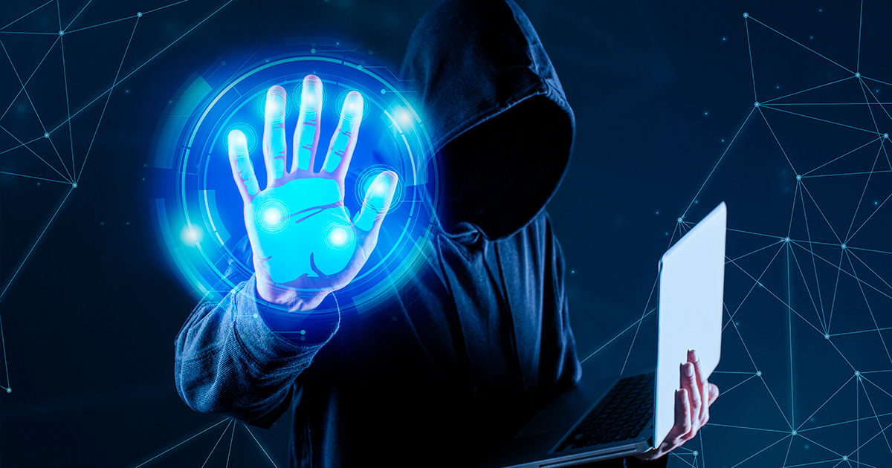
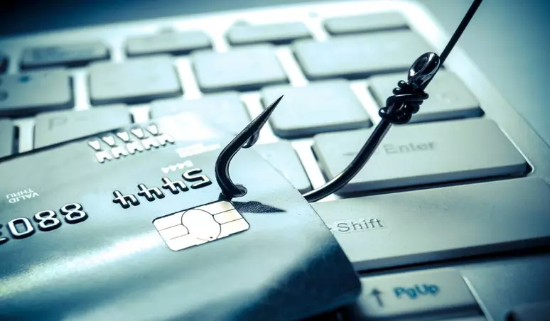

Notícias Relevantes
Brasil sofreu mais de 100 bilhões de tentativas de ataques cibernéticos no último ano
Entenda o que é phishing e como se proteger desse golpe
Crimes digitais e cibersegurança: o que todos deveriam fazer
Aprenda mais, e mantenha-se seguro!
- Você sabe o que é CIBERSEGURANÇA?
- O que é Phishing e como evitar essa ameaça
- As Melhores Práticas de Senhas
- SEGURANÇA DIGITAL: COMO SE PROTEGER DE ATAQUES CIBERNÉTICOS?
- 3 dicas para se proteger de ataques ransomware
- ATAQUES CIBERNÉTICOS: por que você PRECISA pensar na sua SEGURANÇA ONLINE?
- Entenda como funcionam os ataques cibernéticos